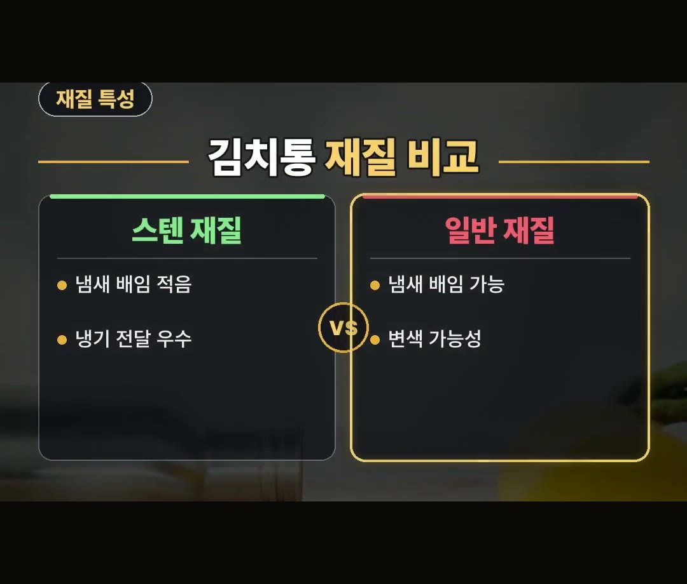
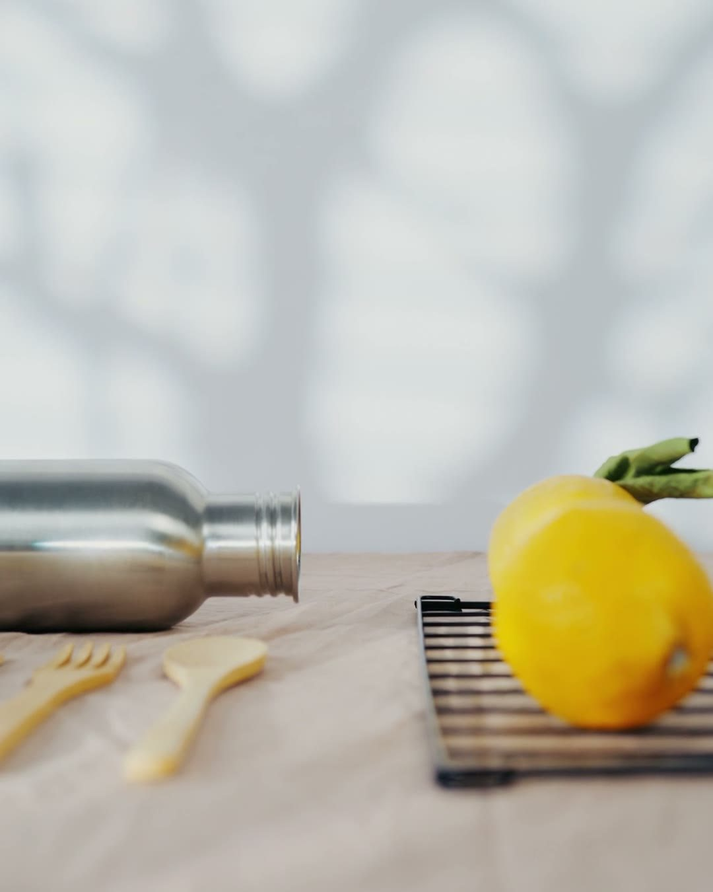
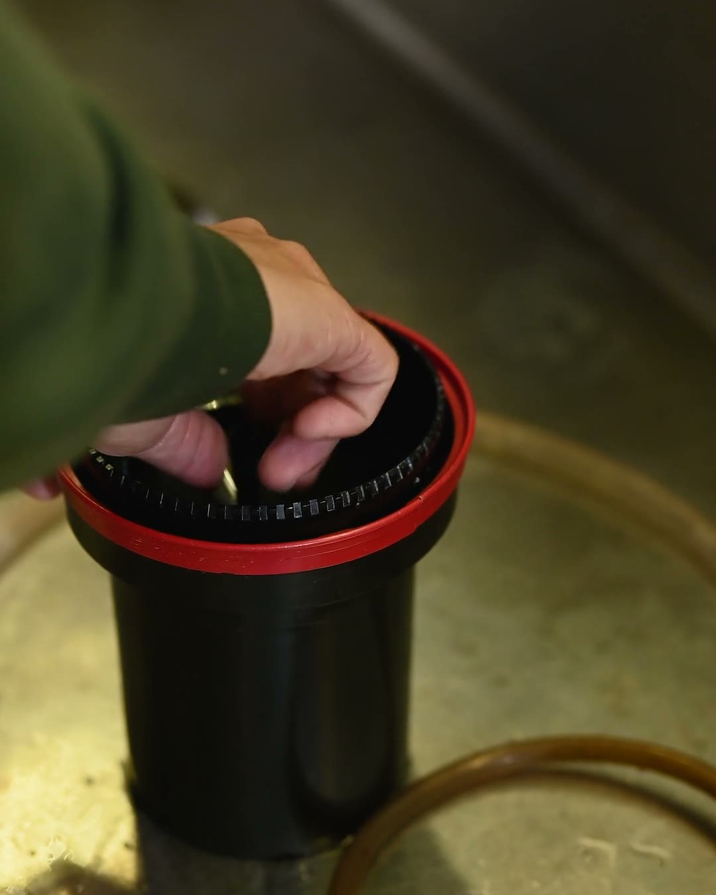
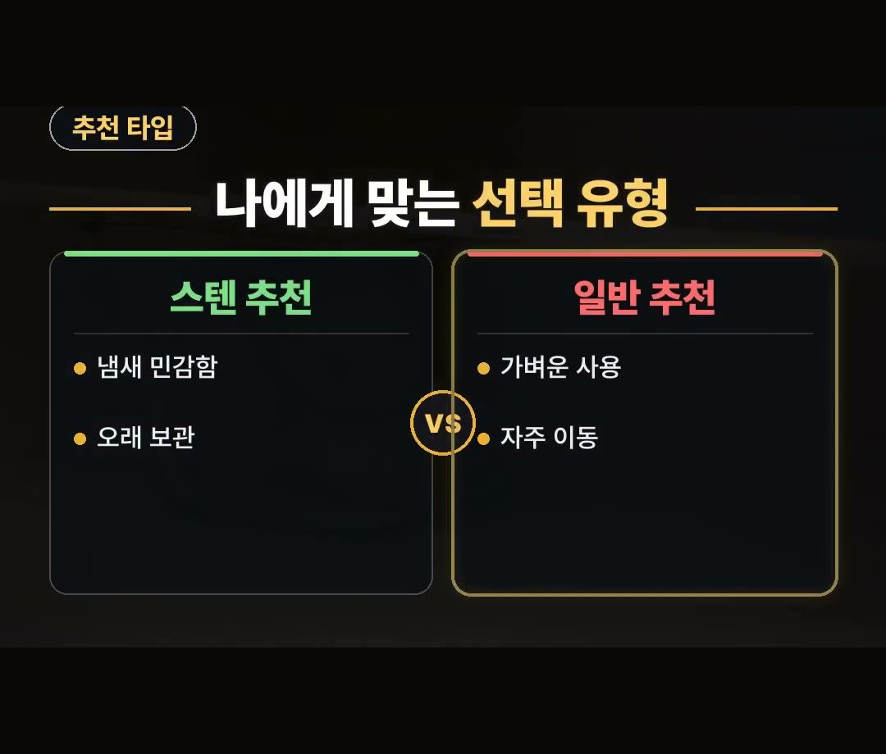
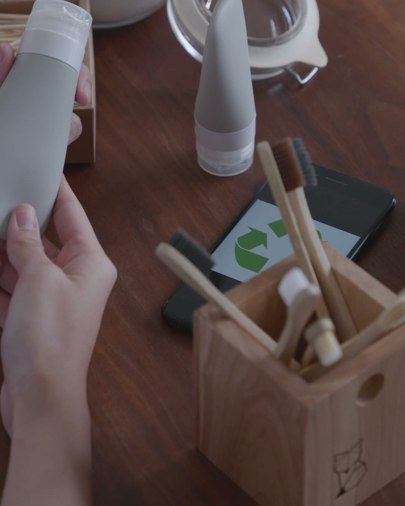

김치통 추천, 김장 김치 냄새 배는 이유와 재질·밀폐 구조 고르는 기준
※ 이 글에는 제휴 링크가 포함되어 있으며, 링크를 통해 구매하시면 일정 수수료를 받을 수 있습니다. (가격은 같습니다)
※ 이 포스팅은 쿠팡 파트너스 활동의 일환으로, 이에 따른 일정액의 수수료를 제공받습니다.
※ 이 콘텐츠는 토스쇼핑 쉐어링크 활동의 일환으로, 링크를 통한 구매가 발생하면 일정 수수료를 지급받습니다.
김장을 마치고 김치를 통에 나눠 담는 요즘, 같은 김장 김치인데도 냄새가 배어서 버리는 집이 있습니다.
통을 고르기 전에 알아 두면 좋은 재질과 밀폐 구조의 차이를 정리했어요.
이번 김치통 추천 글에서는 재질 비교, 구입 전 체크 리스트, 집 상황별 선택 유형을 차례로 살펴볼게요.
돈 아끼는 연구소 아낌 소장이 김치통 고르는 기준을 정리해 봤어요.
구입 전에는 뚜껑 실리콘 패킹의 밀폐와 손잡이 유무를 먼저 보세요!
그리고 무거운 통이 부담스럽다면 스텐 통은 맞지 않을 수 있다는 점도 기억하세요 😊
같은 김장 김치인데 김치 냄새가 배는 이유
같은 김장 김치인데도 어떤 집은 냄새가 배어서 버리게 됩니다.
이 차이를 가르는 부분으로 이 글에서는 밀폐와 재질, 두 가지를 짚어 볼게요.
먼저 밀폐예요.
밀폐가 안 되면 냄새가 새고 색도 금방 변해요.
통이 제대로 닫히지 않으면 김치 냄새가 밖으로 새어 나오고, 김치 색도 변하기 쉽습니다.
그다음이 재질이에요.
어떤 재질이냐에 따라 냄새가 배는 정도도 달라집니다.
스텐 김치통과 일반 재질, 무엇이 다를까

김치통 재질은 크게 스텐 재질과 일반 재질로 나누어 살펴볼게요.
특성을 비교하면 이렇습니다.
- 스텐 재질: 냄새 배임 적음, 냉기 전달 우수
- 일반 재질: 냄새 배임 가능, 변색 가능성

스텐 김치통은 냄새 배임이 적고 냉기를 전달해요.
반대로 일반 재질은 냄새가 배어들 수 있고, 시간이 지나면 변색 가능성도 있습니다.
김치 냄새가 배는 것이 걱정이라면 이 차이부터 눈여겨보세요.
구입 전 체크 리스트: 실리콘 패킹과 손잡이

재질을 정했다면 다음은 구조예요.
뚜껑 실리콘 패킹과 손잡이 유무를 먼저 보세요.
실리콘 패킹은 뚜껑이 닫혔을 때 밀폐가 되는지와 이어지는 부분이라서, 밀폐력을 살펴보는 단서가 됩니다.
구입 전에 확인할 점을 목록으로 모아 볼게요.
- 실리콘 패킹으로 밀폐가 되는지
- 손잡이가 있는지, 없는지
- 재질이 스텐인지, 일반 재질인지
이 세 가지는 우리가 고를 때 볼 기준으로 정리한 것입니다.
손잡이는 통을 옮길 일이 있는 집이라면 같이 봐 두면 좋겠어요.
우리 집엔 어떤 김치통이 맞을까: 선택 유형

집 상황에 맞춰 고르면 부담이 덜해요.
유형을 둘로 나누어 볼게요.
- 스텐 추천: 냄새에 민감한 집, 오래 보관하려는 집
- 일반 추천: 가볍게 쓰고 싶은 집, 자주 옮기는 집
김치 냄새에 민감하다면 스텐 통이 잘 맞아요.
가볍게 쓰거나 자주 옮겨야 한다면 일반 재질 쪽이 맞는 유형입니다.

살 때 한 가지 더 유의할 점이 있어요.
무거운 통이 부담스럽다면 스텐 통은 맞지 않을 수 있습니다.
냄새 배임이 적다는 장점만 보고 고르기보다, 통을 들고 옮기는 일이 부담스럽지 않은지도 함께 떠올려 보세요.
김치통 추천 참고용, 이런 제품도 있어요
상품 설명에 따르면 3.2리터 2통으로 구성되고 핸들이 달린 제품도 있다고 합니다.
앞에서 본 손잡이 유무 기준으로 보면, 핸들이 달렸는지 살펴보는 예가 될 수 있어요.
다만 이 내용은 상품 설명에 나온 특징을 그대로 전한 것이라서, 우리 집에 맞는지는 위의 체크 리스트와 선택 유형에 비춰 판단해 보세요.
이번 김치통 추천은 한 가지 예를 소개하는 정도로 봐 주시면 좋겠습니다.
정리
- 스텐 재질은 냄새 배임이 적고 냉기를 전달해요. 일반 재질은 냄새 배임과 변색 가능성이 있어요.
- 구입 전에는 실리콘 패킹 밀폐와 손잡이 유무를 먼저 살펴보세요.
- 냄새에 민감하고 오래 보관한다면 스텐, 가볍게 쓰고 자주 옮긴다면 일반 재질이 맞아요. 무거운 통이 부담스럽다면 스텐 통은 맞지 않을 수 있어요.
링크는 아래에 모아 두었어요.
📌 2026년 11월 기준 정보예요. 가격은 시기에 따라 달라질 수 있어요.
사진·영상: Pexels (Anna Pou, Annushka Ahuja, Ron Lach, Sarah Chai, Tima Miroshnichenko, Zakaria HANIF)